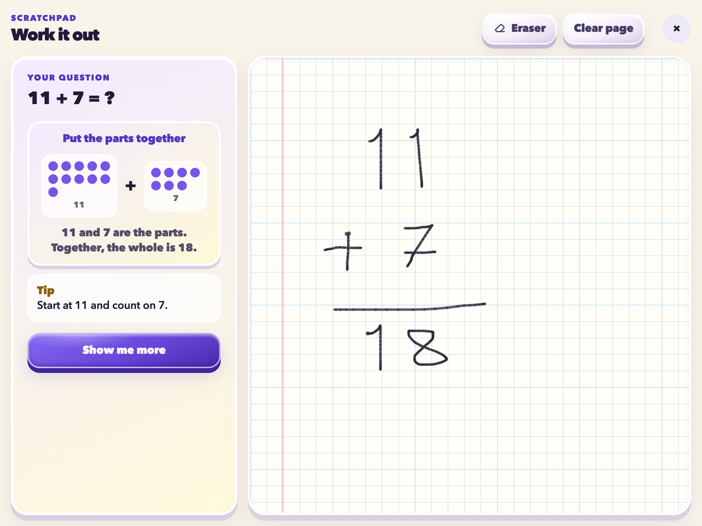
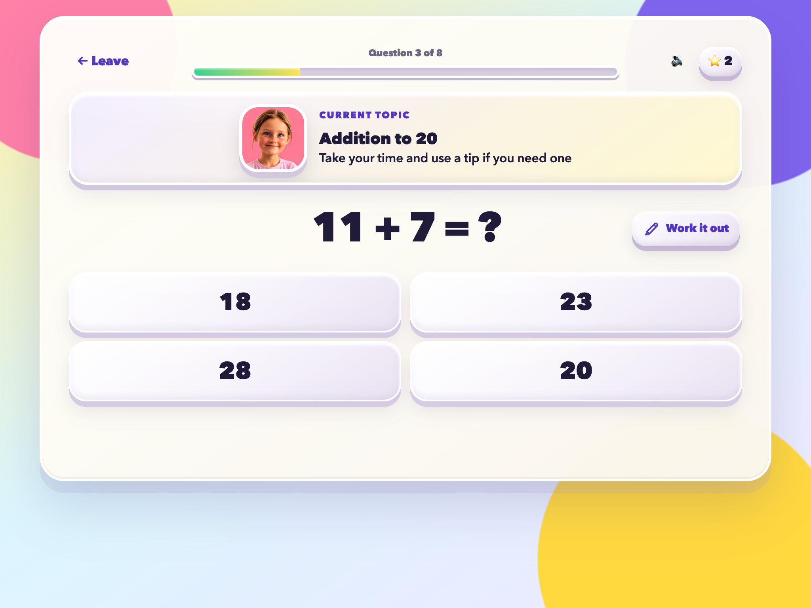
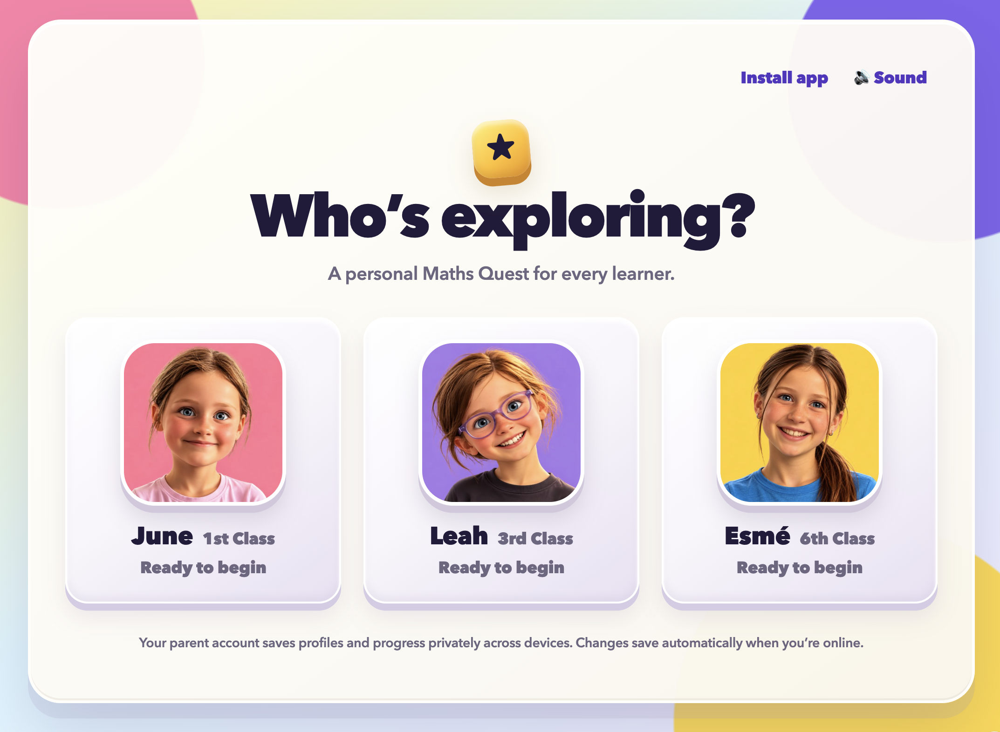

Mistakes are safe
A wrong answer opens another route to understanding. Children can try a tip, see a visual model and work through a similar example.
Based on the Irish primary maths curriculum · 1st–6th Class
Maths Quest gives children short, playful practice with helpful explanations and room to make mistakes, so they can finish each quest understanding a little more and feeling more capable.
Free to play on iPad, phone and computer. No account or download needed. Optional parent sign-in saves across devices.
See how Maths Quest works in 45 seconds.
Explore personal maths practice, Work it out, Beat Quest and optional saving across devices.
Children become more confident when they have time to think, useful help when they need it and another chance when something goes wrong.
A wrong answer opens another route to understanding. Children can try a tip, see a visual model and work through a similar example.
Open Work it out for question tips, visual models and a canvas to sketch a solution. Support stays close while children work things out for themselves.
Clearer arithmetic models show how to combine parts, take away, build equal groups and share. A varied question mix keeps each quest fresh while children build understanding before faster recall.
Work it out
Open Work it out from a question to bring the question, helpful tips and a sketching canvas together. Draw a picture, group objects or jot down a calculation using a finger, pencil or mouse.
Reveal a tip, explore a visual model or work through a similar example at your own pace. Pencil and eraser tools make it easy to try an idea and change it.

No account is needed to begin. Choose a learner and their topics, then start a quest. A grown-up can sign in later to save across devices.
Choose a first name or nickname, class level and friendly character avatar.
Include the topics being covered at school and leave everything else for later.
Learn with extra support, practise a personal mix, try a challenge or build fluency through music in Beat Quest.
Personalisation
Maths Quest notices which ideas are becoming secure and which ones could use another look. It revisits tricky topics gently, keeps familiar skills fresh and recognises answers completed with help as part of learning.
There are no leaderboards, public rankings or comparisons with other children.

Beat Quest
Begin by seeing the pattern. As accurate times-table streaks grow, the track adds drums, bass, chords and melody.
The music makes practice playful while the learning remains the point.
Rooted in the Irish curriculum
Maths Quest draws on Ireland’s national primary maths curriculum to shape its lessons and practice for 1st–6th Class. Choose the topics your child is covering at school, then explore them through short quests, visual explanations and helpful examples.
The curriculum places value on playful learning, reasoning and solving problems. Maths Quest brings that spirit into home practice, helping children explore ideas and build understanding at their own pace.
Maths Quest is an independently developed resource. These links provide curriculum context; they do not imply endorsement by the organisations listed.
Optional parent accounts
Play as a guest with profiles and progress saved on this device, or sign in with Google from the grown-ups area to save across devices.
A parent account saves learner profiles, preferences, photos and completed results privately. Changes save automatically when online; offline changes stay on the device until they sync when you reconnect.
Account controls let a grown-up sign out or delete their account. Playing without an account is always available.
Start without an account.
Save across devices when it suits your family.
Built with grown-ups in mind
The protected grown-ups area shows what has been practised and where a little support might help. Completed-quest history records the date, activity, first-try answers and questions completed independently, so you can look back on each learner’s practice.
Why Maths Quest exists
Maths Quest began with a simple question: could maths practice be playful and effective without creating more pressure?
It brings together experience as a parent, educational designer and product designer, with equal care given to the learning and the experience.

Choose a learner, shape their practice and help confidence grow one quest at a time.
Free · Private · No download